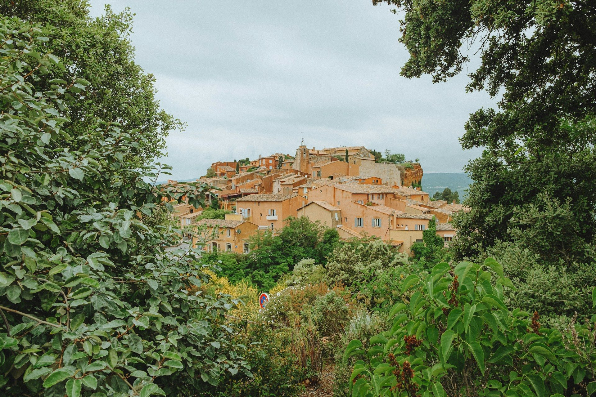

Visiter la Provence
Le palais des Papes, la Bonne Mère, les calanques, les villages perchés du Luberon et les Carrières des Lumières : la Provence se visite toute l’année.
Photo : Chelsea Essig / Unsplash
La Provence s’étend des remparts d’Avignon aux falaises des calanques. Avignon, Aix-en-Provence et Marseille sont à 2 h 40 à 3 h 15 de Paris en TGV, et chacune sert de base pour rayonner vers le Luberon, les Alpilles ou la côte.
L’hiver y est souvent ensoleillé : c’est la saison des marchés de Noël, des foires aux santons et des randonnées au calme dans les calanques. Chaque guide donne les horaires, les prix 2026, l’accès et nos conseils.
Que voir en Provence
-
 Avignon et le palais des Papes
Avignon et le palais des PapesLe palais des Papes, le pont de la chanson et une vieille ville ceinte de remparts.
-
 Aix-en-Provence
Aix-en-ProvenceLe cours Mirabeau, les marchés, les fontaines et la montagne de Cézanne.
-
 Marseille
MarseilleNotre-Dame de la Garde, le Vieux-Port, le Panier et le MuCEM.
-
 Les calanques de Cassis
Les calanques de CassisPort-Miou, Port-Pin et En-Vau : falaises blanches et eaux turquoise.
-
 Gordes et le Luberon
Gordes et le LuberonLe village perché de Gordes, l’abbaye de Sénanque et les ocres de Roussillon.
-
 Les Baux-de-Provence
Les Baux-de-ProvenceLe village perché, la forteresse en ruine et les Carrières des Lumières.